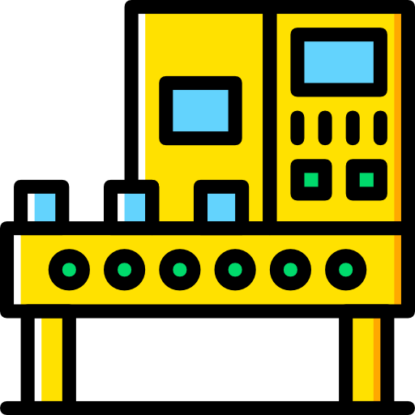
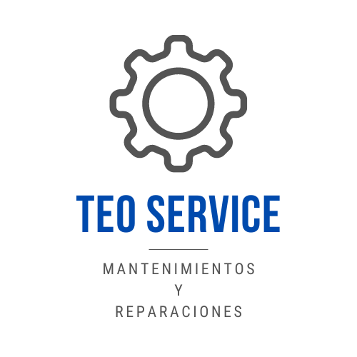

<ion-header [translucent]="true" collapse="fade">
  <ion-toolbar>
    <ion-buttons slot="start">
      <ion-menu-button autoHide="false"></ion-menu-button>
    </ion-buttons>
  </ion-toolbar>
</ion-header>

<!-- <ion-content class="ion-padding">
  <ion-searchbar
    animated="true"
    placeholder="Buscar"
    debounce="100"
    (ionChange)="buscar ($event) "
  ></ion-searchbar>

  <ion-card *ngFor="let maquina of maquinas; let index = i">
    <ion-item-sliding #slidingItem>
      <ion-item class="item-label item ios in-list ion-focusable hydrated" [routerLink]="['/seleccion/' + this.maquina.maq_id]">
        <ion-avatar slot="start">
          
        </ion-avatar>

        <ion-item>
          <ion-label class="sc-ion-label-ios-h sc-ion-label-ios-s ios hydrated">
            <h2>{{maquina.maq_nombre}}</h2>
            <h3>{{maquina.maq_tipo}}</h3>
            <p>{{maquina.maq_comentario}}</p>
          </ion-label>
        </ion-item>
      </ion-item>
      <ion-item-options side="end">
        <ion-item-option
          (click)="eliminarMaquina(maquina, index, slidingItem)"
          color="danger"
        >
          <ion-icon name="trash"></ion-icon>
        </ion-item-option>
        <ion-item-option
          [routerLink]="['/tabs/principal/actualizar-maquinas/' + this.maquina.maq_id]"
          color="primary"
        >
          <ion-icon name="create"></ion-icon>
        </ion-item-option>
      </ion-item-options>
    </ion-item-sliding>
  </ion-card>

  <ion-fab
    [routerLink]="['/tabs/principal/crear-maquinas']"
    vertical="bottom"
    horizontal="start"
    slot="fixed"
  >
    <ion-fab-button class="btnCrear">
      <ion-icon name="add"></ion-icon>
    </ion-fab-button>
  </ion-fab>
</ion-content> -->

<ion-content class="ion-padding">
  <ion-card>
    <ion-grid>
      <ion-row>
        <ion-col size="4">
          
        </ion-col>
        <ion-col size="8">
          <ion-card-header>
            <ion-card-title  class="ion-text-center">Bienvenido a Teo Service</ion-card-title>
          </ion-card-header>
        </ion-col>
      </ion-row>
          <ion-card-content  class="ion-text-center">
           Tu app de registro de mantenimientos!
          </ion-card-content>
        </ion-grid>
        </ion-card>
        <ion-grid>
          <ion-row>
            <ion-col size="12">
              <ion-button (click)="registrarMantenimiento()" color="primary" expand="block" size="large">
                <ion-icon  slot="start" name="construct-outline"></ion-icon>
                Registrar mantenimiento
              </ion-button>
            </ion-col>
          </ion-row>
          <ion-row>
            <ion-col size="6">
              <ion-button (click)="addMaquina()" expand="block" shape="round" color="light" size="large">
                Agregar Maquina
              </ion-button>
            </ion-col>
            <ion-col size="6">
              <ion-button (click)="addRepuesto()" expand="block" shape="round" color="light" size="large">
                Agregar Repuesto
              </ion-button>
            </ion-col>
          </ion-row>
        </ion-grid>

</ion-content>